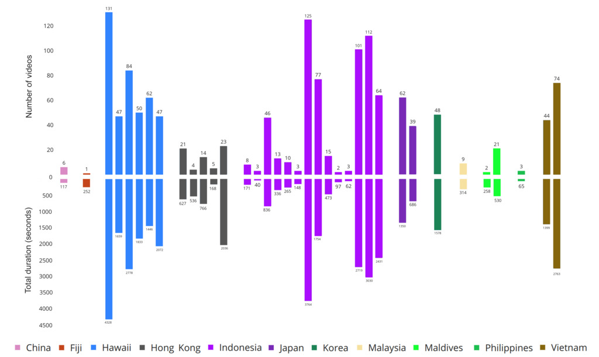

Marine Video Kit: A New Marine Video Dataset
for Content-based Analysis and
Retrieval
Quang-Trung Truong1
Tuan-Anh Vu1
Tan-Sang Ha1
Jakub Lokoč2
Yue Him Wong Tim3
Ajay Joneja1
Sai-Kit Yeung1
1Hong Kong University of Science and Technology
2FMP, Charles University, Prague, Czech Republic
3Shenzhen University
International Conference On Multimedia Modeling (MMM), 2023 (Oral Presentation)
Several examples of dataset video frames that are extracted with 1fps and their ClipCap descriptions.
Abstract
Effective analysis of unusual domain specific video collections represents an important practical problem, where state-of-the-art general purpose models still face limitations. Hence, it is desirable to design benchmark datasets that challenge novel powerful models for specific domains with additional constraints. It is important to remember that domain specific data may be noisier (e.g., endoscopic or underwater videos) and often require more experienced users for effective search. In this paper, we focus on single-shot videos taken from moving cameras in underwater environments, which constitute a nontrivial challenge for research purposes. The first shard of a new Marine Video Kit dataset is presented to serve for video retrieval and other computer vision challenges. Our dataset is used in a special session during Video Browser Showdown 2023. In addition to basic meta-data statistics, we present several insights based on low-level features as well as semantic annotations of selected keyframes. The analysis also contains experiments showing limitations of respected general purpose models for retrieval. Our dataset and code are publicly available at


Marine Video Kit dataset - Statistics and Videos
Some marine videos are selected from the dataset.
Triton_Dec2018
Oahu 23th July

Total length: 12.38 hours
Number of videos: 1374
Dive sites: 11 countries/ regions